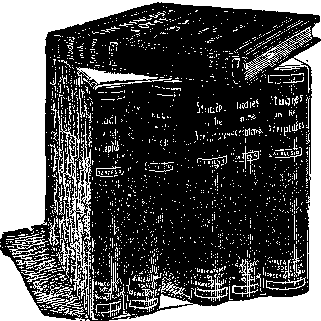

Vol- V. B R O O K L Y N. N. Y. No. 8.
4,000 CHURCHES REPORT NO GAIN— WORLDLINESS THE CAUSE.
ed favors and privileges and opportunities and knowledge which the Messianic Kingdom will bring to the world, the whole human family would develop into sheep; but the Parable seems to teach to the contrary.
An arraignment of the “Tendencies of the Times” was contained in the report of the committee on narrative presented before the Northern Presbyterian Assembly. The report deplores the “distressing loss of membership in many synods of the church.” Nearly 4,000 churches during the last ecclesiastical year failed to secure a new member through confession of faith, according to the report.
Other features brought out were that some of the churches’ most intelligent and influential members spend the Sabbath on the golf links instead of attending Divine worship; that the extent and boldness of the white slave traffic has become appalling, even extending, the report declares, into Sabbath schools and Christian Endeavor societies.
W. H. Houston, of Columbus, O., secretary of the permanent committee on vacancy and supply, declared the problem of securing pastors was one of the most distressing of every non-Episcopal church. The Assembly voted to appropriate additional finances with which to assist the work of the vacancy and supply committee.—Kansas City Post.
The gathering to judgment will be a gradual one, not all at the same moment, When the Son of Man shall come in His glory . . . then shall He sit upon the Throne same'year. ^l^natFoi^win°befathered? however—first the living nations; subsequently, gradually, more and more will be gathered from the tomb, until the race shall be assembled, excepting those who • have been favored ’ ’ '
o/ His glory: and before Him shall be gathered all nations; and He shall separate them one from another, as a shepherd divideth his sheep from the goats.—Matthew 25:31, 32.
BOTTLED LIGHT AND HEAT.
Bottled light and heat for use anywhere, in any climate, at a minimum cost, is now possible through a discovery of a method of liquefying natural gas by Dr. Walker A. Snelling, a government chemist. The discovery paves the Way for the commercial use of millions of cubic feet of natural gas which go to waste in the petroleum fields of the country. Dr. Snelling liquefied several hundred feet of the gas, stored it in a thick glass bottle, and lighted his office in Pittsburgh with it for several months. The cost was less that that of ordinary illuminating gas.
The gas is forced into a long coil of steel piping and then to a compressor. In the compressor it is subjected to 700 or 800 pounds to the square inch. When the gas is completely liquefied, in the course of several hours, it is drawn off in metal or thick glass containers, capable of sustaining high internal pressure. In this condition it. can be shipped to any climate. All that is necessary to obtain the gas is to tap the plug of the container.. According to the government experts, the commercial possibilities of the discovery are almost unlimited.— Emerson (Neb.) Enterprise.
/'■’KRISTIAN people have held various views of this parable, some claiming that it has been in process of fulfillment all through the Gospel Age, and that it will be finished at the Second Coming of Christ. This is shown to be erroneous by the first verse of the parable, which definitely locates the time of its fulfillment. It begins at the time of the Second Coming of Christ, as is clearly intimated by the words, “When the Son of Man shall come in His Glory, and all His holy angels with Him, then shall He sit upon the Throne of His glory; and before Him shall -be gathered all nations,” etc. These momentous events have not yet occurred, and consequently the parable still belongs to the future.
Day of Separation.
Another interpretation is that at the Second Advent of Christ, on the very day of His arrival, all the 20,000,000,000 of the dead will come forth and, together with the living, will all arrange themselves before the Lord, and that during that 24-hour day He, as the great King, will separate the sheep class from the goat class, gathering all the sheep to the right hand and all the goat class to the left hand.
This interpretation is not very satisfactory to anybody, because, first, it implies that, the Lord has made no determination yet as respects those who are
tively. Father Adam was on trial, when he failed his trial was over, was condemned, and since none of
and He his
posterity could be better or purer, as all were really parts of him, the condemnation rested against us all.
The Apostle Paul not only points out that the members of the Church are to be judges of the world with Christ, but he also points out that in the Divine Plan a specific period or epoch, a “day with the Lord,” a thousand years with men, is set apart for the very purpose of judging the world. His words are, “God hath appointed a Day in which He will judge the world in righteousness by that man whom He hath ordained.” The Apostle’s declaration is that God hath given assurance for the fulfillment of this promise by raising Jesus from the dead.
On what score shall this Judgment
Gospel Age.
The New
All shall see the shall discern that
in advance during the
Dispensation.
King in His beauty, --------- ----- they are living under the reign of Immanuel, shall realize that the clouds and darkness of this present time of evil, of si ’, of Satan, have rolled away and a New Dispensation has been inaugurated, and that no longer will it be necessary to suffer for righteousness’ sake, but only for evil doing.
The work of separating will be a gradual one, and will not be fully completed until the close of the Millennial Age. Each member of Adam’s race will have
His and those who are not.
.tting
take place? on trial?
For what will the world be Will mankind be tried for
Adam’s sin? No, because Christ died for Adam’s sin. Will the world be tried for the sins of its own weakness and ignorance while yet it was blind and deaf? No, because the Redemption-price which Jesus paid, not only covered Adam’s personal transgressions, but also the transgressions of all his posterity which have resulted from the ignorance and
a full opportunity for not only receiving instruction in righteousness; but for making his personal decision as respects the same. In other words, each will have an opportunity for the development of character. Those who either refuse or neglect the opportunity for forming characters which God could approve as worthy of life eternal will be among the “goats,” while all who will form characters in accord with the Divine arrangement and Plan will be among the “sheep.”
The rewarding of the sheep and the punishing of the goats will come at the close of the Millennial Age. True, great blessings will be upon all during that Age, upon each in proportion to his obedience
GRAIN WITH EXTRA HEADS.
Barley and oat growing experiments, by G. W. Overton, a rancher on Rock Creek, just north of Chico, Cal., have developed grains that may be adopted throughout the United States.
The experiments are considered so remarkable that the Government has ordered an inspection of his process with a view of establishing his methods throughout the country.
The feature of the new barley is that from two to five heads grow on each stock, the principal head ripening first and being, easily, twice as large as the others, which are of normal size. . The combined heads are about nine inches long, while the stock is tough and about as large as an ordinary lead pencil, standing against a heavy wind.
Overton's tame oats have an average of three heads to the stock.—Indianapolis News.
this interpretation to the usual, but erroneous, thought that all the dead are either in Heaven with God and the holy angels or in some nether world with demons and flames, it involves the thought that they were dealt with before they had been judged, before their true characters had been determined. It further involves the thought, therefore, that some who had gone to Heaven and been there for centuries should have been in the other place, and others who had possibly gone to the other place by mistake should have gone to Heaven, and this parable shows the time and manner in which the Lord will finally determine as to whether or not any serious mistakes had occurred and endeavor to rectify them.
Again, this view is not satisfactory in that it supposes God to be fallible, or else supposes a gathering of millions
from Heaven and hell to this earth again for no particular purpose, merely for a spectacular display which could alter nothing. This view, as a whole, is farcical, for it would be absurd to think of any kind of a judgment of the whole world or a separate gathering into two companies all over the earth in a 24-hour day. True, this is the prevailing view, but that proves nothing as respects its truthfulness or its reasonableness. It is to the discredit of theologians in general that any could entertain such a thought for a moment, or suppose that the Almighty and His glorified Son would participate in such a useless sham.
The correct view takes into consideration the various parts of the parable and applies them in harmony with other
Weakness and frailty which followed the first transgression. The weaknesess to the Divine ‘standards, but only~at~the and blemishes of heredity are, therefore, dose of the Age wall come' the full re
TRADITIONAL THEOLOGY, NOT BIBLE TEACHING.
all paid for, and the world cannot in
justice be held responsible
for these
when it shall be brought to trial.
How We Are to Be Judged.
In this respect it will be the same with them as it was with the Church; when we accept Christ and the favor of God through Him, are we judged for the
PHOTO-DRAMA OF CREATION.
Probably the most effective means of presenting the Gospel ever undertaken is that of the Photo-Drama of Creation, which tells the complete Bible story from the beginning to the ultimate perfection of the Creator’s designs, in beautiful motion picture, slides and panorama. It is being shown free of charge in all principal cities.
“WHERE ARE THE DEAD?”
This article was published in a recent ’issue of THE BIBLE STUDENTS MONTHLY, Vol. 5, No. 3. The interest aroused and the great demand for copies of it have been remarkable. A sample copy will be mailed to any one free upon receipt of post-card request.
What Say the Scriptures About
& SHEOL—HADES—HELL?
X A very interesting pamphlet, ex- A X plaining every verse in the Bible in A X which the word Hell is found, will be sent on postal-card request,
X free. Address, Bible & Tract So-& ciety, Brooklyn, N. Y.
Scriptures and in harmony secrated reason.
The World’s Judgment
The parable applies at the Gospel Age, at the Second Christ, after the judgment of
with con-
Day.
end of this Advent of the Church
is past, after the Lord shall have selected from amongst mankind a people for His name, a “little flock,” and the “great multitude” also. The Bride class will be with Him in His Throne, and shall not come into judgment with the world. As the Apostle points out, the Church will be the judges in the throne, and will not, therefore, be represented by either the sheep or the goats gathered before the
weaknesses and imperfections which went before our justification, or are we merely judged for those blemishes which followed our justification? Certainly not more than the latter.
May we not see clearly that the King’s own death as the man Christ Jesus covered all the blemishes and weaknesses and imperfections of the past, for the world as well as for the Church? Even their blemishes and imperfections of the future would not be permitted to weigh against them if they are sincerely desirous of becoming His sheep, of being led to Him.
So, then, the judgment of the world _____... ~ .. . ... in the future Age will be very similar to throne for judgment. His words are,, the judgment of the Church in this Age, “Know ye not that the saints shall judge so far as the matters of judgment are the world?”—1 Corinthians 6:2. concerned. As now the Lord s people are
Those who have been accustomed to judged according to their desires and in-think of the Judgment Day as merely a tentions twHlP^be with the
time of terror, “doomsday,” will, no der the blood, so it will be w doubt, be surprised when we call to their world m its Judgment Day the.pa t attention that the Scriptures speak to be under the blood and the wo d
• ■ - • - - • be on trial to see what it will ao witn
Christ, with the love of God manifested toward it, with all the favors and mercies of the Divine Plan within its reach.
the contrary of this, and assure us that the judgment day will be a mark of Divine favor toward humanity. The Lord, guiding the words of the Prophet David by inspiration, calls upon all mankind to rejoice that there is to be a judgment day.—1 Chronicles 16:31-34.
Our race had a trial once representa-
As to the ultimate results of that judgment of the world the Lord gives but little clew. We might naturally be inclined to suppose that, with all the bless-
ward, which will be very different from the reward granted in the end of this Age to the sheep of the Gospel flock. The promise to the faithful sheep of this Gospel Age is expressed by the Lord Himself in these words, “To him that overcometh will I grant to sit with Me in My throne, even as I have overcome and am set down with My Father in His Throne.” “To him that overcometh will I give power over the nations, and he shall rule them with a rod of iron.”
The promise to the sheep of the Millennial Age is a Kingdom promise, too, but does not pertain to the same Kingdom. They will inherit “the Kingdom which God prepared from the foundation of the world,” from the time of Adam’s creation.
Perfect Man to Rule.
Even the obedient of mankind will not be fit to be entrusted with the kingdom of the world until absolute perfection shall have been reached, and the perfection of the race will not be attained, as we have seen, until the end of the thousand-year Day appointed, for the purpose; then the worthy will be granted the kingdom of e rth, “the dominion under the whole heavens.” With this transfer of the earthly control to the per-
feet man of that time,
torial Kingdom will end.
Christ’s Media-
In delivering
the kingdom up to the perfect and worthy members of the race, He will be delivering it up to the Father, in full harmony with the Father’s original arrangement, interfered with by original sin.
A sharp distinction should be drawn between the Heavenly promise and Heavenly rewards which are for the Church, selected or elected during the Gospel Age, and the earthly rewards, the earthly kingdom and earthly Paradise blessings which are to be provided for the remainder of mankind willing to be in accord with the Lord under the favorable terms as they will then be presented to them. If the earthly blessings will be glorious, the heavenly blessings will exceed in glory, for “Eye hath not seen, neither hath ear heard, nor hath it entered the heart of man, the things which God hath in reservation for those who love Him.”
The goat class will not be punished for such crimes as are common today, murder, theft, arson, blasphemy. They will be punished because of a failure to develop properly the spirit of Love, for “Love is the fulfilling of the Law,” and none can meet the Divine approval except those whose sentiments will attain to the degree of loving Jehovah with all their hearts; minds, being and strength, and their neighbors as themselves.
Everlasting Fire,
Verse 46 explains, "These shall go away into everlasting punishment,” and in verse
(Continued on 2d page, 2d column.''
lit* gtWe
IPHJBMSHIBT!* AT «» BEEKMAX ST., NEW TOKK CITY
C. W. Hek, Editor.
Monthly—12 cts. a year. Single copies, 1c.
An Independent, Unsectarian Re-' llglous Newspaper, Specially Devoted to the Forwarding of the Laymens Home Missionary Movement for the Glory of God and Good of Humanity.
CHURCH FEDERATION.
Church Union Is Alm of Leading Denominations.
“Apart from the ever-present duty of evangelizing the world, which presses insistently upon every denomination, the two great problems confronting the churches today are: First, correlation of effort and enterprise; and second, unity, long despaired of, has been brought within practical realization, not by creed-elimination, but by a federation of all the Protestant creeds.
“The Federal Council of the Churches of Christ in America grew out of the inter-church conference in. New York in November, 1905, whereat a definite plan was proposed looking to the organization i Of a federal council of the Churches of Christ in America. From 1906 to 1908 the plan was presented to and approved by the gathering bodies of no less than thirty-two great denominations, such as the Presbyterian general assembly, the Lutheran synods, the Disciples of Christ, the general conference of the Methodist Episcopal church, and the general conference of the Methodist Episcopal church South.
“As a result of this, there was held in Philadelphia in December, 1908, the first meeting of the Federal Council. The organization was completed, national officers were elected, state and national headquarters appointed, and a working plan agreed upon. The personnel of the council is composed of four hundred officially appointed or elected delegates from the thirty-two evangelical denominations alluded to, representing over a hundred thousand ministers and eighteen million members. Like the Methodists, the Federal Council holds its general meeting quadrennially. During the interim the activities are controlled by an executive committee of sixty, whose meetings are held annually, and by special sessions whenever necessary. A business committee of nine is in perpetual session.
“While the foregoing brief outlines of •united action indicate only a primitive form of federal union, nothing more could perhaps be expected in such a short duration of time. Yet the federation is real, and the federal council demonstrates the fact not only that the church union Is feasible, but that It has been actually achieved.
Many National Problems.
“Further problems which naturally come under the purview of the federal council—most of them national in scope and bearing—are such questions as Sunday observance, prohibition and temperance, family life, literature and education, church extension, research statistics, social science, propaganda and social life in the churches. There are standing committees on all these subjects, and much advantageous work has already been accomplished both for the advantage of those churches already within the federal council and for the needs of the world at large.
All Creeds Work Together.
“All the great creeds being now constitutionally and practically federated, it for the first time becomes possible to meet and discuss common denominational or interdenominational questions on equal ground and for the best commonweal. There is no relinquishment of creed necessary, and consequently no room for more or less acrimonious discussion along that line. The federal council renders possible a real Christian unity without destroying or tampering with any individual beliefs.’*—Knoxville (Tenn.) Sentinel.
FREE LITERATURE!
Send postal-card request to the Editor for free copies of this paper. Some of the interesting subjects you may have for asking are:
Calamities—Why Permitted?
Creed Idols Smashed!
Spiritism is Demonism!
Cardinal Gibbons’ Sermon.
Prince Lucifer of Old Now Prince of Demons.
The Hope of Immortality.
Do you Believe in the Resurrection?
Most Precious Text.
Our Lord’s Return.
Which Is the True Gospel?
What is the Soul?
The Rich Man in Hell.
Thieves in Paradise.
The Handwriting on the Wall.
Purgatory Fires! Not Now, but Soon.
Greatest Thing in the Universe. .N The Sabbath Question. . . The Battle of Armageddon.
xne xsatLie ip ariuageaacn. n
MIX X** XIX XjX Xpi 4X 4* Xpi XJX jqx IW
(Continued, from 1st page, column.) 41 the punishment is referred to figuratively as “everlasting fire.” This is the special point on which we are opposed by many of the Lord’s people, who, we think, misunderstand the teaching of His Word, because still more or less under. the baneful influence of the smoke of the Dark Ages. It will be admitted that in our Lord’s parables figures are used: for instance, in one, wheat and tares; in another, sheep and goats. The tares are represented as being bundled and burned, likewise the goats are to be burned. But our dear friends forget that if the tare is a symbol and the wheat is a symbol, so must the garner be a symbol and the fire a symbol. Likewise, as the sheep is a symbol and the goat a symbol, the fire must be a symbol.
The next point is, What does fire symbolize? We answer that it always symbolizes destruction. The Lord has thus, in the figures used in the Scriptures, particularly guarded us against the thought of preservation of life in this punishment.
It is our duty in seeking the interpretation of the Scriptures to interpret symbols and parables by literal statements. Let us hear, then, from the Scriptures what is the punishment for sin. The Apostle Paul refers to sinners and the punishment that would be brought upon
GOD’S GIFT TO HUMANITY
“Thanks be unto God for. 'His unspeakable Gift.”—2 Cobinthians 9:15.
JESUS, our Savior, is God’s great Gift.
To appreciate the teaching of the Bible on this and on every subject, we must handle the Word of God honestly, not deceitfully. We must recognize that our Lord Jesus is one person, and the Heavenly Father another person. Only thus can we appreciate how God could give His Son, and how Jesus could consent to be the Gift of God to man. As we have previously seen, the oneness between the Father and the Son is not that declared by the creeds, a oneness of person, but is that declared by our Master Himself, saying that He and the Father are one in the same sense that He desires all of His disciples, His followers, to be one—one in mind, in purpose, in will, in effort. “That they may be one, even as we are one.”—John 17:21, 22.
Jesus is God’s unspeakable Gift in that it is impossible to tell the riches of God’s grace in this connection—the numberless blessings and mercies which are ours through Jesus. He represents to us the very fullness of every Divine provision for our eternal welfare. “In Him dwell-eth all the fullness of the Deity bodily.” (Colossians 2:9.) In a certain sense all of God’s intelligent creatures are in His image and represent Him. Thus the angels and cherubim are Godlike; even Adam, made a little lower than the angels —of human nature—was an image of God in the flesh—fully in harmony in every line of his character and being with the Divine character. Adam, bodily, represented God in the world.
But all these things, true of angels and of men, are still more true of Jesus; and the Scriptures tell us that He was the “Logos,” the Father’s Word or Messenger—Jehovah’s active Agent in all the work of creation. “By Him were all things made that were made, and without Him was not one thing made.” The Logos, the highest, the first, the Alpha and the Omega of Jehovah’s Creation, became the Gift of God to man.
Nor was this Gift compulsory; rather, the Logos entered fully into the transaction. He had absolute faith in the Heavenly Father’s Wisdom, Justice, Love and Power; hence, when the proposition opened that He might leave the heavenly condition for an earthly condition, in which He would perform a great service pleasing to the Father and beneficial to men, the Logos .delighted to do the Father’s will. He was made flesh. The disciples and others, beheld that He as a man was not as other men, but was “holy, harmless, undefiled and separate from sinners.”
The Redeemer’s difference from the fallen race is again declared in the statement: “A body hast Thou prepared Me for the suffering of death.” The Scriptures declare that He took the Same nature as the one that had sinned, in order that He might redeem sinners. But in His flesh was no sin. Otherwise, He could not have been our Redeemer. Only a sinless one could fill the Divine requirements and give to God a Ransom for Father Adam, the perfect man, thus redeeming his life from destruction and, at the same time, redeeming all of his family involved in sin through him.
“Freely Delivered Him Up.”
God’s Gift was not completed in merely arranging that His Son should temporarily become a man, to be our Redeemer. Indeed, the transfer of nature from the heavenly to the earthly was merely an incidental, made necessary by the Divine Law: An eye for an eye; a tooth for a tooth; a man’s life for a man’s life. And so we read that the Father set before the Son “the great joy,” the influence of which was to lead the Son cheerfully to endure the bitter experiences of His earthly life, as we read; “Who, for them, saying, “They shall be punished with everlasting destruction from the presence of the Lord and the glory of His power.” Here we have it plain enough: the punishment is not everlasting torture, but everlasting destruction; or, reversing the statement, everlasting destruction is the everlasting punishment. Again we read, “All the wicked will He destroy”; again, “The soul that sinneth, it shah die.”
We submit to the candid reader that this parable, rightly interpreted, is full of meaning to the Lord’s people, showing not only how the Seed of Abraham, the Elect with Christ at the head, wifi soon be the King of. the earth to reign during the Millennial Age, to bless the world, to judge the world, to uplift the world, but how, also, all mankind will assuredly be brought under the restraint of that Judgment Day and its assistances, and how, after the enjoyment of those blessings, the tests will be finally unto life everlasting or death everlasting, according to whether they develop the sheep character of docility and obedience, or the goat character of waywardness and self-assertion. The Lord’s provision, as the Apostle points out, is—“the gift of God is eternal life through Jesus Christ our Lord,” but “the wages of sin is death.” —Romans 6:23.
the joy that was set before Him, endured the cross, despising the shame.”
This joy is intimated to have been: (1) the Savior’s pleasure in doing the Father’s will; (2) The joy of bringing many sons to glory—the Church; (3) The pleasure and joy of being the world’s Restorer, delivering them from the power of Satan, sin and death. These joys, commingling, were quite sufficient. The Redeemer endured such contradiction of sinners against Himself as, eventually, brought Him to the cross, saying, “Not My will, but Thy will, O Lord, be done.” Ha realized that under the contract into which He had entered, His loyalty to the Father would mean His faithfulness “unto death, even the death of the cross. Wherefore, also, God hath highly exalted Him, and given Him a name above every name.” (Philippians 2:8, 9.) Thus the Redeemer has attained this glorious exaltation to the Father’s right hand—to the Divine nature, glory, honor and immortality—as the result of His faithfulness.
An Opposite Course from Satan's.
The Apostle, evidently, purposes to draw our attention to the difference between the course of Satan and that of the Logos in respect to loyalty and obedience to Jehovah. Satan proudly assumed that if he had a separate Empire he could manage it better than was the Divine arrangement. Lucifer, the morning star, said in his heart: ‘T will ascend above the stars [the other angels]; I will be as the Most High [a dictator, a ruler].” Pursuing this ambitious course, Satan beheld in our first parents a new order of beings, with procreative powers designed to bring into existence a race that would fill the earth. Lucifer assayed to be ruler over this human creation. BEe became a rebel against the Divine arrangement in so doing; he captured the first pair by his misrepresentations, and not only did he thus become the “prince of this world” (the present order of things), but additionally, as Jesus explained, he became the murderer of .the race. (John 8:44.) He has, indeed, had a reign of thousands of years, but with what horrible results! The whole creation is “groaning and travailing in pain,” under the death sentence.
“Meditated Not a Usurpation.”
St. Paul intimates that although the Logos was still higher in glory and honor than Lucifer, in that He was “the Only Begotten,” the chief representative of Jehovah, nevertheless He was humble. The Logos “meditated not a usurpation to be like God.” (Philippians 2:6. Emphatic Diaglott.) On the contrary, He was very willing to accept the Divine proposal that He should take the lower nature, that of man for a time, in order to carry out the Father’s Plan. How detestable the pride of Lucifer, afterwards called Satan! On the contrary, how beautiful is the humility exhibited by the Redeemer! He was loyal to the core. He would be merely the Father’^ Word, Logos, mouthpiece. His joy should be, not in seeking self-advancement, but in glorifying the Father; and the Apostle points out that He faithfully and loyally carried it out to the conclusion of His course—in all things desiring .e will of the Father who sent Him.
What an exhibition this was to ''ll the holy angels! And did the Father permit Him to really suffer loss because of His loyalty, His faithfulness? Assuredly not! He was not left in death. He was raised from death. Neither was He left by the Father on the lower plane, that of human nature, which He took merely for the purpose of suffering death on man’s behalf. On the contrary, the Father highly exalted Him and exhibited to angels and to men the character pleasing in Jehovah’s sight. Bringing the Only Begotten One forward, Jehovah prophetically declares: “Let all the messengers of God worship Him!”—Hebrews 1:6.
This same privilege has come to the Church. In response, the invitation to become joint-sacrificers with Christ, to walk in His steps, and to enter into and share His glory, has been accepted by one after another ‘of God’s saintly people, from Pentecost until now. They have confidence that “He who brought again from the dead our Lord Jesus, that great Shepherd of the sheep,” is both able and willing to bring them also, through Him. to eternal glory. As He walked the narrow way,” they have courage to walk in His steps. As He overcame, they have the encouragement of His Promise that “His grace wifi be sufficient” for them.
To this class Jesus is God’s unspeakable Gift. To these favored ones, His footstep followers, the Savior is specially an unspeakable Gift of God. If as a Gift to the world His merit is beyond the power of tongue to tell, how much more so is He the unspeakable Gift to the Church—to the Elect! As the “Captain of their Salvation,” He is leading forth these other sons of God, His younger brethren, to glory.—Hebrews 2:10.
The Savior is an unspeakable Gift to the Church as the Bridegroom. The
thought of becoming an associate and joint-heir in all the glorious work of God throughout the Millennium, is an inspiration which makes the trials and difficulties of the way seem as nothing. Besides, we have the assurance of th© Lord that in subsequent Ages the Father will continue to show special riches of grace and loving-kindness toward us who are in Christ Jesus. As our “Elder Brother,” the Savior. is an unspeakable Gift. Our interests are His interests; our welfare, His welfare; all of the journey in His footsteps which He invites us to take, and which He arranges for us, H© has passed over before. We merely walk in His steps.
As our great High Priest over th© House of Sons, He is an unspeakable Gift. Through Him we are privileged to be the Royal Priesthood. Our offerings to Jehovah, our little all, would be unacceptable, because we are all by nature sinners, children of wrath, blemished. But our great High Priest’s merit imputed to our sacrifices makes them ao ceptable. As Christ’s “members” we are privileged to “present our bodies living sacrifices, holy and acceptable to God.” (Romans 12:1.) From whatever viewpoint we look, the Savior is God’s unspeakable Gift, especially to His Church.
Of Grace, Not of Justice.
Undoubtedly Justice must be recognized in respect to the Creator’s dealings with His creatures. God, being the great Representative of the principle of Justice, continually holding it up before His creatures, and demanding their obedience to this Law, surely could not be exempted from its operation Himself. To this the Scriptures agree, assuring us that “Justice is the foundation of His Throne.” Our endeavors in the past to harmonize Love and Justice with our great Creator’s dealings with humanity have continually involved us in difficulty. We were assured by the prominent creeds of the world that the Creator had knowingly and willingly brought us into existence under such conditions that th© great majority of mankind would spend an eternity in torture.
We were unable to see Justice in any such arrangement, yet feared to criticise our Creator, lest He should, if possible, do something still worse for us. But our reason balked at the proposition, while we desisted from criticizing the Creator. We could not endorse such a program, nor could we see it to be in harmony with the Divine regulations governing ourselves. If we are to love our enemies and be compassionate toward them, should more be expected of fallen beings than of our perfect Creator?
Justice Always Satisfied.
From the Divine standpoint the human family are all convicts, under death sentence, dead in trespasses and sins, wholly without rights or privileges. As the French Government, not unjustly, has allowed the medical profession to make experiments with convicts who are under death sentence, to try upon them the effects of fear, poison, etc., so God not unjustly has allowed mankind, all under death sentence, to practice all kinds of evil upon one another, and to learn from each other great lessons respecting th© exceeding sinfulness of sin and the wages or penalty of sin—death.
Justice merely exacts its penalty, but that penalty paid by Adam and his family left them hopeless respecting any future life. Unworthy of everlasting life, they died; and surely they become no more worthy while dead. None has any claim upon Justice. Adam at the very moment of his fall might have been smitten with a thunderbolt, without having any claim upon Justice; for he was under a death penalty. The fact that Justice allowed him to live for many years with a forfeited life meant not a waiving of
the death penalty, but Divine liberality in respect to the execution of the criminal.
When, therefore, in th© Bible God pre-
sents a hope of a future life through the death of His Son, His unspeakable Gift, it must not be understood as signifying obligation on pod’s part toward the sinner. It means mercy, grace. Nor does God ignore His own sentence and the justice of the case in the exercise of His, mercy. His Law must stand. The death sentence must stand. Justice must be vindicated without a shadow of turning. Divine Mercy is made to intervene by providing the unspeakable Gift.
“Herein was manifested the love of God,” in that “He gave His Only Begotten Son, that whosoever believeth in Him might not perish, but have everlasting life.” As we have just seen, Adam and his race under the death sentence had perished, except as God from the beginning foreknew His intention to send His Son into the world for human Redemption—His unspeakable Gift. The Redemption, when finished, will fully have satisfied the claims of Divine Justice—not only as respects the little company now being selected—the Church, the Bride of Christ—but ultimately also as respects the “sins of the whole world.” This is a Gift, then, not called for by Divine Justice, but merely prompted by Divine Love.
Divine Love and Justice Co-operate.
After the unspeakable Gift shall have been made applicable to the whole world of mankind at the beginning of Messiah’s reign, Divine Wisdom will insist that, although the Redeemer may give to humanity every opportunity possible for recovery from sin and death, and every assistance possible for Restitution, nevertheless, none shall have eternal life except as perfect beings in heart harmony with the Creator. Therefore the work of Messiah’s Kingdom will be to deliver humanity from sin and death, and to give opportunity for all to return to harmony with the Father; and any who will not so do, Justice will insist shall be destroyed in the “Second Death.” Against such a decision, Divine Wisdom, Love and Power will offer no objection, nor will any redemption be effected for their wilful sin.
“Thanks Be Unto God.”
The Scriptures declare that the world knows not God, and that only the eyes •of the consecrated Church are open to behold the “Love of God, which passeth •understanding.” This class only, therefore, is in any sense prepared to give thanks to God now for the unspeakable Gift. Their thanks go up, not only in words, but also in actions, which “speak louder than words.” These thanks ascend as sweet incense to God as His blessings, and mercies abound in all spiritual things toward those who are in Christ Jesus.
By and by, “All the blind eyes shall "be opened and all the deaf ears shall be unstopped.” Then the whole world of mankind, including those awakened from the sleep of death during Messiah’s reign, will be in a condition to recognize God’s unspeakable Gift and to render thanks. When the wilful evil-doers shall have been destroyed, “Every knee will bow and every tongue will confess, to the glory of God.” Then every creature in heaven and on earth and in the sea shall be heard saying, “Praise, glory, honor, dominion and might be unto Him that sitteth on the Throne, and unto the Lamb, forever,” for the unspeakable Gift.
PASTOR RUSSELL’S SCRIPTURE STUDIES.
These volumes deserve a careful study by all who are not thoroughly satisfied with the Bible interpretations of the “dark ages.” They can be bought for a trifle or borrowed free. Address publishers, as below.
Respecting the first volume of this work •“Bill Arp,” the famous Southern Philosopher and Journalist, said:
“This wonderful book makes no assertions that are not well sustained by the Scriptures. It is built up stone by stone, and upon every stone is the text, and it becomes a pyramid of God’s Love and Mercy and Wisdom. There is nothing in the Bible that the author denies or doubts, but there are many texts that he throws a flood of light upon that seems to uncover its meaning.”
The set of six volumes, cloth, 3,000 pages, Is supplied by the BIBLE AND TRACT SOCIETY, NO. 17 HICKS ST., BROOKLYN, N. Y., for the usual price of one such volume, namely, $2. This includes postage or expressage to your j Some, ahywhere.
THE WORLD’S NEED OF A MEDIATOR
“There is one God, and one Mediator between God and men, the Man Christ Jesus, who gave Himself a Ransom for all, to be testified in due time.”—1 Timothy 2 :5, 6.
MANY fail to understand why a Savior and a redemptive work are necessary. They ask, Why was it necessary for Jesus to come into the world? How did His death influence God to the forgiveness of human sin? And why was the better sacrifice of Jesus typified by the sacrifice of bulls and goats under the Jewish Law Covenant? A right understanding, a correct understanding, of these matters is the very essence of true theology, and most helpful to us all.
The Divine arrangement proposes that everything in accord with God must be absolutely perfect. Both angels and men were created perfect, “in God’s image.” And the Divine Law, in the interest of all, cuts off from fellowship and blessings all who deliberately go into sin, and fellowships only such as are perfect. Hence the sentence upon Father Adam for his disobedience cut him off from Divine fellowship and favor under the sentence, “Dying, thou shalt die” (Genesis 2:17)— not, “Going to eternal torment, thou shalt roast.”
True, Adam’s children were never thus condemned, but, born in sin and “shapen in iniquity” (Psalm 51:5); under the laws of heredity they never were perfect, never were fully in the image of God, never were, therefore, in harmony with God, but always shared Father Adam’s alienation and condemnation. They were “children of wrath” (Ephesians 2:3)—justly sharing their Father Adam’s penalty of death, because imperfect—not worthy of life under the Divine arrangement.
Reconciliation a Necessity.
Whoever sees clearly these facts of Scripture must perceive that humanity would have no hope of everlasting life except through Divine mercy—forgiveness. But some one will say, Why should there be any necessity for the Logos to leave heavenly glory and be made flesh and then to die, “the Just for the unjust,” to make possible our return to Divine favor? Why should not God forgive the sins of Adam and his race even as we are directed to forgive those who trespass against us?
God’s attitude towards sin very properly is different. “His work is perfect.” (Deuteronomy 32:4.) He created Adam in His own image. We sinners are not God’sz creation direct, but have merely come into existence under laws of heredity. Justice is under no obligation to us. All rights and privileges granted to Father Adam were forfeited and have been abrogated. From the Divine standpoint of justice, mankind is a dead race. More than this—the great Supreme Ruler and Judge of the Universe, having condemned us as unfit for eternal life and fellowship with Himself, could not justly set aside His own decree. God could not, therefore, justly, righteously, change His verdict, for that would imply that our sentence was an unjust one.
The Divine Government refuses to be thus compromised, but instead has provided a salvation for humanity through Jesus’ death. The method adopted maintains the dignity of the Divine Law to the full, and at the same time reveals the fact that our Creator is the very embodiment of sympathy and love—qualities of His which never would have been so fully appreciated by either angels or men unless God had permitted human sin, had provided the penalty He did, and then provided the Redemption through the Logos—Jesus.
“Between God and Men.”
A mediator is one who stands between two parties who are at variance, for the purpose of bringing about reconciliation. The two parties mentioned in our text are not God and the Church, but God and the world—mankind in general. Man sinned. God justly condemned the sinner. The Mediator’s first work in reconciliation must be to offer a substitute to Justice for Adam’s sin. Our text tells us that the Man Christ Jesus did this very thing—He gave Himself to be a Ransomprice for all mankind. He did this when He reached perfect manhood, at thirty years of age, when He consecrated His life to God—even unto death. He finished this giving of Himself on Calvary when He cried, “It is finished.” (John 19:30.) The perfect, spotless, uncontaminated life of the Man Christ Jesus, thus laid down a voluntary sacrifice, constitutes a Ransom-price for Adam and his race.
The word Ransom in our text has a very strict meaning, namely, a corresponding price. Adam in his perfection was in God’s image—“very good.” The Man Jesus, who gave Himself a corresponding price, was in God’s image— “very good.” He corresponded exactly to the perfect man Adam, and His sacrifice of Himself in death corresponded exactly to the penalty against Adam, which the entire race has shared. This great transaction, accomplished nearly nineteen centuries ago, is not yet generally proclaimed, but will be testified to all in due time, our text declares. As yet only the few, guided by the Word and enlightened by the Holy Spirit, can appreciate this matter, because its details have not yet been fully worked, out.
“When all its mighty work is seen, Praise shall all tongues employ.”
St. Paul declares that the calling and election of the Church to become the Bride of Christ and His Joint-heir in His Messianic Kingdom is a “Mystery,” appreciated by few. The Mystery is that in the Great Jehovah’s Plan this Elect Church, now in process of selection, is to constitute with Jesus her Redeemer the great Mediator who, during the Millennium, will mediate the New Covenant between God and mankind in general. The foundation for all that Mediatorial work —the all-essential basis of it—was effected by our Lord Jesus alone when He, as the Man Christ Jesus, gave Himself a Ransom-price for all. But the great work of reconciliation belongs to the future and is to be shared in by the Bride class.
Well did John the Baptist point to Jesus and say, “Behold, the Lamb of God! which taketh away the sin of the world.” (John 1:29, 36.) In Jesus resided the Ransom-price, and not in His Church; in Jesus’ work, and not in our work; in Jesus’ sacrifice, and not in our sacrifice, was the potency for the cleansing away of Adam’s sin and the setting aside of his death penalty. Whatever share the Church was granted in the great work of the world’s reconciliation was by grace and not by our merit, not by our sacrifice.
Mediation Not Yet Begun.
The Redeemer has not yet begun His work of Mediation between God and men. He merely provided the basis of that reconciliation in His death at Calvary. The merit of His sacrifice is in Jehovah’s hands, but is not yet appropriated for the sins of the world. The world’s sins are not yet forgiven. Hence God still treats the world as sinners, aliens, foreigners, enemies through evil works.
Everything is in readiness for the forgiveness of the sins of the world; but the Redeemer waits until He shall have accomplished another feature of the Divine Program, namely, the selection of the Church to be His Bride; or under another figure, to be members of the Body of Messiah, under Jesus the Head—members of the Body of the Mediator, under the Redeemer’s Headship. “For Moses verily said unto the fathers, A Prophet shall the Lord your God raise up unto you from amongst your brethren like unto me [Moses]; Him shall ye hear in all things whatsoever He shall say unto you. And the person that will not obeyethat Prophet [that Teacher], shall be destroyed from amongst the people.”—Acts 3:22, 23.
This antitypical Moses, Head and members, has been in process of development, or raising up, for now nearly nineteen centuries. God raised up Jesus the very first, and is since raising up us also by Jesus. And through the First Resurrection shortly the entire Body, the Messiah of glory, will be changed, made partakers of the Divine nature.—Revelation 20:6; 2 Peter 1:4.
The antitypical Moses will inaugurate the New Covenant with Israel and the world, even as the typical Moses inaugurated the old Law Covenant with typical Israel at Mt. Sinai. As the old Covenant had sacrifices of bulls and goats and was inaugurated first by a sprinkling of the tables of the Law, representing a satisfaction of Divine Justice, and secondly the sprinkling of all the people, representing their reconciliation through the same sacrifice, so the antitypical Moses, the Mediator of the New or anti typical Covenant, must first produce "better sacrifices,” the antitypical, and then with the merit of these make satisfaction to Divine Justice and reconcile the people— all who are willing of the whole world. When Moses slew the animals whose blood made effective the typical Covenant which he mediated, that sacrificing was merely a preparatory work. The Law Covenant was not operative in any sense of the word until the animals were all slain and the blood was sprinkled on the tables of the Law.
So in the antitype, Jesus, the Mediator of the New Covenant, must first, after the pattern of Moses, complete all His sacrificing before He begins the work of Mediation. First of all, as we have seen, He offered up Himself without spot unto God, finishing that work at Calvary. Since then He has been accepting and offering up as a part of His own sacrifice the members of the Church, as they come unto the Father through Him, presenting their bodies to be living sacrifices, holy and acceptable unto God. (Romans 12:1.) This sacrificing of the flesh of Christ has been in process for nearly nineteen centuries. Not until these “better sacrifices” (Hebrews ,9:23) shall have been finished will the real work of Mediation and Atonement for the sin of the world take place.
“Able Ministers of New Covenant.”
All those who now present their bodies to Jesus, desiring to share with Him in suffering for righteousness in this present time, that they may have a share with Him in His coming glory and Kingdom— all these are in Bible language “able ministers (servants) of the New Covenant.” They are serving the New Covenant, although it has not yet been sealed with the precious blood. They are serving in calling those who have an ear to hear, in showing them the privilege of suffering with Christ, that they may also reign with Him. They serve the New Covenant in helping to build one another up in the most holy faith and in assisting one another in the narrow way of 'faithfulness and self-sacrifice even unto death.
But specially these, each for himself, serves the New Covenant arrangement by fulfilling the terms of his ““Covenant by sacrifice.” (Psalm 50:5.) Jesus was the first Minister, or Servant, of this Covenant. AU of His members are associated in this ministry. When the ministry service of sacrifice shall have been completed, the grander ministry of this New Covenant in glory will begin. The Christ, the Messiah, the Mediator in glory, as the Antitypical Melchisedek, will combine the office of King with His other Office of Priest, or Instructor and Helper.
The first work will be the application of the blood of Atonement, the Ransomprice for the sins of the whole world. As soon as thus presented on man’s behalf, Divine Justice will accept it. Forthwith the world will no longer be enemies of God, children of wrath, without God and without hope, but on the contrary, the Ransom-price for their sins having been accepted, the sentence of death against all will be canceled, and the whole world will be turned over to the control of the Mediator. He, having mediated towards God, and having made satisfaction for human sin through the merit of His own sacrifice, will then proceed, to reconcile the world.
During the six thousand years of the reign of sin and death the world has become so alienated from God that the majority do not earnestly desire reconciliation. This, however, is because of their weakness and ignorance. For a thousand years the great Mediator will instruct them, giving chastenings where necessary and in proportion to their spirit of wilfulness, and thus gradually He will uplift them out of their ignorance, blindness and sin defilement—out of the tomb and out of all the weaknesses of the dying condition—back into the image of God, from which all fell in Father Adam.
The only exception to this rule will be that such as wilfully, intelligently reject the Divine provision for their recovery will be punished with everlasting destruction. They will perish “like brute beasts,” as St. Peter declares. (2 Peter 2:12.) The grand finale will be attained when “every creature in heaven and on the earth” shall be heard acclaiming praise to Him that sitteth upon the Throne, and to the Lamb forever.—Revelation 5:13.
Jesus the Church’s Advocate.
From the foregoing it will be seen that the world’s salvation is to be a Restitution to human perfection—an earthly Eden lost through Father Adam’s disobedience. It will be noticed also that the Church has no part with the world in that Restitution, nor in that Mediation for a thousand years. The Church will be members of the Mediator who will confer the Restitution blessings and privileges on the non-elect.
But the fact that the Church will not be numbered with mankind in the human Mediation, wh.ch will take place during the Millennium, does not mean that the Church now has no sins, nor that those sins do not need to be covered and canceled. It does mean that the Church is not to get back the human life and earthly rights forfeited by Adam and to be restored under the Mediator’s Kingdom. Instead, the Church is promised glory, honor and immortality—heavenly nature. As a reward for participation in the sufferings of Christ she shall be made sharer in His eternal glories.
What the Church needs and has is an Advocate with the Father—Jesus Christ the Righteous. Thousands of humanity who are weary and heavy laden with sin and desirous of reconciliation with God, and who hear the Message of this Gospel Age and accept its terms, present their bodies living sacrifices apd purpose to be footstep followers of Jesus. But because these are by nature sinners, children of wrath, under Divine sentence, imperfect, their sacrifices could not be accepted of the Father as was that of Jesus; hence they need an Advocate.
Jesus has merit in the hands of Justice, the result of His sacrifice, which is being kept to be given by and by to the world of mankind, justifying them to full Restitution. As the Advocate of His footstep followers Jesus imputes a share of the merit of His sacrifice to the Church to make good her imperfections, so that her sacrifice may in God’s sight be holy and acceptable.
This application of the merit of Jesus’ sacrifice was made for all of the Church at once—long ago—when He “ascended up on high, there to appear in the presence of God for us (as our Advocate).” The already consecrated disciples in the upper room received the Pentecostal blessing as the evidence that Jesus as their Advocate had appeared for them and imputed of His merit for them, so that their sacrifices were acceptable to the Father. The same principle holds true throughout this Gospel Age for this same class.
ONLY ONE TRUE GOSPEL
THE TRUE MESSAGE ALMOST BURIED UNDER HUMAN TRADITION
“1 marvel that ye are so soon removed from Him that called you into the Grace of Christ unto another ‘‘gospel,” which is not another; but there be some that trouble you and that would pervert the Gospel of Christ; . . let him be
accursed.”—Galatians 1:6-8.
WHEN we remember that there is but the one Lord, one Faith, one Baptism, presented in the Bible we are astounded to find so many faiths, so many “gospels,” presented by so many denominations, all bearing the name of Christ and all bearing marks of some relationship to the Truth—to the Divine Revelation.
St. Paul noted the fact that even in his day the brethren in Galatia had “so soon” turned away, in part at least, from the true Message to another, a perversion. No wonder, then, if during fifteen centuries that Gospel was almost buried under human tradition. And need we wonder that we make such slow progress since in getting back to “the faith once delivered to the saints,” the Truth that Jesus declared to be the sanctifying power of God working in His people?
It will not do to say that we have many denominations, but only one Gospel. Denominations were not organized for amusement, but because the founders of each believed that they saw a sufficient reason, a sufficient difference of Gospel, to justify them in forming a new sect. We are bound to admire their zeal for the Truth, which led them often through severe persecutions and through martyrdom towards the Light.
All the same, each of us owes the duty to himself, to his brethren, and above all, to the .Lord, to search carefully for the original Gospel of the Word of God—no matter what it may cost, him to reject the more or less false gospels handed down by well-meaning brethren of the past.
The Galatians’ New Gospel.
The new “gospel” which the Galatians were disposed to accept was one that i is very prevalent today, and is as much I to be reprehended today as when St. Paul wrote. Their new “gospel” consisted of a mixing of the Jewish Law with the Grace of God in Christ, as the Apostle shows. They said, Believe on the Lord Jesus Christ, surely; He is the Savior, He is the Redeemer; we must believe on Him, but that is not enough. We must become Jews under their Law arrangement, and between the Law and Christ we will obtain salvation. Many Christians today are making the same mistake of adding something to the Gospel of Christ. They hunger for some command, and desire to be under a Law, as a dog, used to wearing a collar and chain, feels not himself unless thus restrained.
Such dear Christian people, like the Galatians, do not fully appreciate the Master’s statement, “If the Son shall make you free, ye shall be free indeed.” Such feel - lost without Divine commands —Thou shalt, Thou shalt not, etc.—and rejoice specially in holy days and Sabbaths, church going and formal prayers, because they do not understand that God is better pleased to have us sons than to have us slaves. The poet got the thought correctly when he wrote:
“We can no longer lie
Like slaves beneath the Throne, Our souls now ‘Abba, Father,’ cry, And He the kindred owns.”
A measure of bondage to forms, ceremonies and commands is probably reasonable to expect in immature Christians, whom St. Paul styles “babes in Christ.” (1 Corinthians 3:1.) But growth in grace and knowledge must bring such more nearly to the stature of manhood in Christ and to an appreciation of their relationship to God as sons, else they will not make their calling and election sure to the best things that God has provided.
, The Social-Uplift False Gospel.
From the most prominent pulpits of Christendom the Gospel of Christ respecting the forgiveness of individual sin, the reconciliation of the individual heart, the individual begetting of the Holy Spirit, and the personal walk in newness of life has been discarded. Long ago this Message was considered too personal. Many of the preachers, having had no such experience themselves, properly enough were chary of talking about what they did not understand. But salaries must go on. Sermons, therefore, must be preached, and something must be said. The Social “gospel” has been brought forward to fill the gap. The message of the hour, according to this pseudo-gospel, is not saintliness, not following in the footsteps of Jesus, not Bible study, but athletics, manliness, position in society, attention to political duties, attainment of honorable positions in the world, and great names which will make the church register shine—and money withal.
Far be it from us to teach inattention to the duties and responsibilities of life. Nothing in the words of Jesus or the Apostles admonishes or exemplifies carelessness in respect to health, manhood, womanhood, education, good name and a proper provision of the things needful to the present life. The Gospel of Jesus and the Apostles, however, tells us—most distinctly impresses upon all the followers of Jesus—that their consecration as disciples of Jesus means their death to worldly ambitions for wealth, praise of men, political office and the giving of chief concern to the preservation of their earthly lives. It exhorts that these are all to be considered quite secondary to the new ambitions, the new ideals, set before us in the Gospel.
The followers of Jesus are enjoined to do good unto all men as they have opportunity. This would include, of course, everything akin to social uplift. Indeed, we cannot imagine that any one could be a Christian—a follower of the Lamb of God—without having a deep sympathy with everything appertaining to the welfare of humanity and a social uplift. But the Apostle’s expression, “as we have opportunity,” is a limitation. The mission of the Christian is not social uplift. That is not the work to which the Lord Jesus and His followers dedicated their lives—at least not the kind of social uplift generally understood.
A Social-Uplift That Will Succeed.
The whole work of God in connection with human Redemption is to be an uplifting work for Adam and his entire race. The uplift which God has planned and which He has revealed in the Bible is to be a most thorough one, such as humanity has never conceived. It is to be an uplift mentally, morally, and physically— back to- the image and likeness of God— lost in Eden, redeemed at Calvary. This social uplift of mankind which God is interested in, and of which God is the Center and Fulcrum, is the line in which all the followers of Jesus, rightly instructed, are more interested than any other people in the whole world.
However, the followers of Jesus are soldiers of the cross under His Captaincy, and they are not at liberty to follow theories either of their own or of other men respecting the way in which the great work of uplifting the world is to be accomplished. They are deeply interested in everything which men and women can do for the betterment of humanity in any and every sense of the word. And, as they have opportunity, they are glad to give a word of encouragement and appreciation, or occasionally a helping hand. But theirs is a far more important v : -1'. They are co-laborers with God—not i
men.—1 Corinthians 3:9.
God’s Plan is first to select the Church, the Body of Christ, to be His joint-heirs in the glorious Messianic Kingdom. Then He will use that Kingdom for the thorough and complete social uplift, which all agree is so necessary. The world sees not the Divine Plan, and even the Message of the Grace of God is foolishness to them; hence also the world may probably think of Jesus and His followers as chimerical. Their theory, God’s testimony, is foolishness to the world—and those who follow the Divine arrangement, as St. Paul says, are counted fools all the day long—because they are spending their lives for the accomplishment of things which the world cannot see, understand, appreciate—“the deep things of God.”—1 Corinthians 2:10.
Forms of Godliness.
The gospel of form and ceremony is not always hypocrisy. If reverential forms and chants and printed prayers always came from the heart and were never merely forms, there would be much in them to approve and enjoy. Still, ceremonies are no part of the Gospel of Christ, and to put them instead of it is to make a false gospel. Who will say that either Christ or any of the Apostles presented a Gospel of forms and ceremonies?—Galatians 1:6-9.
The human heart is deceitful above all things, say the Scriptures. It likes to delve into worldliness and frivolity and sometimes into sin, and then to deceive itself into believing that it is the Elect of God and a special subject of His care and sure of heavenly glory. Many such appear to know nothing whatever respecting the Gospel of Christ. Theirs is a “gospel” of good works, donations to hospitals, to social uplift and church-work and forms and ceremonies. They feel a burden roll away when they repeat weekly the phrase, “We have done those things which we ought not to have done, and have left undone the things which we ought to have done, and there is no help in us. Be merciful to us miserable sinners.”
But any suggestion that these are miserable sinners and need to know the way of the Lord more perfectly, and to become justified saints if they would be heirs of God, they would resent. The gospel of formalism has done great injury to such people, many of whom, rightly informed respecting the Gospel of Christ, might be greatly blessed, sanctified and made meet for the inheritance of the saints in light.
As an illustration of the religious stupor produced by the gospel of formalism and ceremony, let US tell you of a gentleman of prominence in London whom we met recently. He said, “I was out to hear you last Sunday. I was one of that audience of thousands, and I want to tell you that you disturbed me greatly. I did not come away from your meeting happy and contented, but the reverse. I was disappointed. Why, the way you presented the matter, showing the terms and conditions of discipleship in the narrow way, and cross-bearing in the footsteps of Jesus, shocked me. I said to myself, Then I am not a Christian at all. I have not even taken the first steps in the Christian way. But when I went home my good mother-in-law said, ‘Do not be alarmed at all—stick to your own religion.’ ”
The Gospel of Christ was waking that man up out of his lethargy of formalism. We told him that we sought to do our duty in presenting the Gospel of Christ in no uncertain terms and that if he should profit by the message and become a joint-heir with Jesus in His Messianic Kingdom as a result of being waked up, he would be thankful for it to all eternity.
“Gospel” of Hell and Purgatory.
Of all the various things substituted for the Gospel of Christ the most awful perversions are the “gospels” of Purgatory and eternal torture! Yet so perverted is the human sensibility to the Truth that if one said he “heard a real Gospel sermon,” the majority would understand it to mean that he heard horrible misrepresentations of the Divine Character and Purpose to the effect that nearly everybody—all except the saintly—are en route for torture at the hands of demons, and that the saintly few are to get to Heaven and to all eternity look over its battlements at their brethren and sisters in torture and to all eternity hear their wails of distress.
How terrible the perversion which could call such stuff “good tidings of great joy which shall be unto all people”! We are glad that the Bible Students, recently in convention, repudiated such a “gospel” as being the one of the Bible. We are glad that they called upon the ministers everywhere to declare themselves in no uncertain terms, and we were glad to note through the newspapers a very general repudiation of the torture “gospel.” Nothing that the heathen have is as bad, and the wonder is that missionaries have made any progress whatever in heathen lands. For the real Gospel, we believe the real heathen are in readiness, hungering—the Mohammedan also.
The Gospel of Faith-Healing.
Faith-healing is another of the false gospels opposed both to the letter and the spirit of Jesus’ teachings. Not a single one of the Lord’s disciples was healed miraculously, nor a single Prophet of old. x.ie miracles which Jesus performed were wholly upon outsiders, not His disciples, and were illustrations of how Himself and His Church in Kingdom glory will bless, heal, uplift and restore all the families of the earth—all the willing and obedient. St. Paul blessed napkins and handkerchiefs to be sent to the sick, but never one of these was sent to the brethren. When Timothy was sick, St. Paul instead recommended a change of diet.
Many dear Christian people are misled by the spurious statement of Mark 16: “These signs shall follow them that believe,” etc. They cling to the passage even after being given abundant proofs that it was added to the Scriptures in the Seventh Century, and that it was omitted properly from the Revised Version. So deeply seated is the love for the “gospel” of healing, that this passage is clung to by some even after it is pointed out to them that they would not dare to eat and drink poisonous things, as it mentions.
The Gospel of Christ, as applied to this Age, is the very reverse of the gospel of healing. Jesus, who was perfect, laid down His life in doing good for others. His Apostles did the same. Indeed the stipulation of discipleship is, He that lov-eth his life and seeketh to save it will lose it; he that loseth his life sacrificially for My sake and for the Gospel’s shall find it. The Gospel of Christ is the Gospel of self-denial and suffering and patient endurance—joy in the Lord and health of spirit, rather than joy and health of the flesh. True, godliness and contentment do often bring to God’s people an increase of health through their rest of mind. But this is neither promised to them nor to be prayed for by them. On the contrary, they are to follow the example of the Redeemer in laying down their lives for the brethren.
The True Gospel of Christ.
In combating the errors, we have incidentally presented the Gospel of Christ. It is a Message that God proposes to bless the world through the Seed of Abtaham, and that Jesus glorified is that Spiritual Seed. It is a Message respecting His Kingdom which shall shortly be inaugurated with power and great glory for the blessing of Adam and all his race with human Restitution, giving to all fullest opportunity of return to the Heavenly Father’s love through the merit of the great Sacrifice accomplished at Calvary. It is a Message, too, that the Redeemer, before taking the Throne of His glory, in harmony with the Divine Program, is now calling, choosing, and proving a “lit-. tie flock” of believers justified through faith in His blood.
These are to be made perfect through! suffering, through sacrifice, by walking in the Master’s footsteps. They have the promise that if they suffer with Him, they shall also reign with Tlim; if they be dead with Him, they shall also live with Him. Whoever sees, hears, appreciates, this true Gospel of the Grace of God in Christ finds in it the power of God unto salvation. The more fully he receives it the more does he possess the power of the Truth, which, if co-operated, with, will work in Him to will and to do the Father’s good pleasure and eventually make him an heir of God and a joint-heir with Jesus Christ the Lord to the Heavenly Kingdom and eternal life in glory.
The question is often propounded, Did. not the dying thief go with Jesus to Paradise the very day in which they both died? And if so, does not this prove that all in harmony with God go to Heaven when they die, whatever may be the condition of others in death?
No, we have made a stupid blunder and misinterpretation of our Redeemer’s dying words to the thief. The wrong thought being in our minds we misinterpreted in harmony therewith. And our interpretation has done an immense amount of harm. Thousands of people have been encouraged to continue a life of sin, trusting that with their dying breath they may have the opportunity of saying, “God be merciful to me,” and. then be immediately ushered into glory, honor and immortality, as joint-heirs with the Saviour, and in as honorable a> station as those who “have fought to win the prize, and sailed through bloody seas” of trial, persecution and self-denial.
What a travesty of Justice to suppose-such an application of this principle! For instance, two ungodly persons quarrel. Both draw revolvers and fire; one dbs instantly; the other, the worse of the two, lives a moment, in which he says, “God, be merciful to me.” Then, theoretically, he passes into glory, while his victim, not having the opportunity for a cry for mercy, we are told, by the same theory, is doomed to endless torture.
Note the circumstance. Jesus hung between two thieves, one of whom joined with the multitude in railing at Him as an impostor, crying out, “Yes, if you be the Christ, save yourself and us from death.” The other, of better heart, honestly admitted his own guilt and the guilt of his comrade, but defended Jesus, declaring that He was innocent. Following this, he addresses Jesus. We paraphrase his words: “Lord, I have defended you against an unjust attack; remember this poor thief if you ever have an opportunity to do a kindness to me in return. I heard you before Pilate say that you have a Kingdom, but not of this Age; some heavenly Kingdom, I therefore presume. I know little about such matters, but from what I have seen of you I can well surmise you King of such a Kingdom. My request is, ‘Remember me, when Thou comest into Thy Kingdom.’ ”
To this Jesus replied, “Verily, verily (so be it, so be it, as you have asked)— verily, I say unto thee this day (this dark day, in which it would appear that I have not a friend in Heaven or on earth—this dark day in which I am crucified as a malefactor, a falsifier and a blasphemer— I say unto thee this day), thou shalt be with Me in Paradise.”
Paradise has not yet come. Messiah’s Kingdom has not yet been established; and it must come first before Paradise Lost can be restored and the whole earth be made God’s glorious footstool, as He has promised. But when the time shall come, when the Kingdom shall be established, when Paradise conditions shall be introduced, the resurrection of that thief will be in order; “for all that are in their graves shall hear the voice of the Son of Man and shall come forth.” The thief will then find himself in Paradise—not merely because of the kindness done to Jesus, but especially because his words indicated a sincerity and honesty of heart such as the Lord is always glad to bless and reward.
On the day of their dying all three went to hades, to sheol, to the tomb, to the state of the dead. The two thieves still remain there, and are amongst those mentioned by the Prophet Daniel when he refers to those “who sleep in the dust of the earth,” who will come forth in the resurrection morning. (Daniel 12:2.) But-Jesus arose from sheol, from hades, from the tomb, from the state of death, on the third day. He had not been to Paradise, for Paradise is not even yet in existence. He had not been to Heaven, for He hadL been dead. Let us hear His own words to Mary on the morning of His resurrection: “I have not yet ascended * ♦ ♦ to My Father, and your Father, to My God, and your God.” (John 20:17.) Could, anything be plainer, simpler, more harmonious?
0 What Say the Scriptures About iy SHEOL-HADES-HELL ?
s A very interesting pamphlet, ex- k. « plaining every verse in the Bible in I* Xl which the word Hell is found, will k
be sent on postal-card request, free.
£l Address, Bible & Tract Society, k Brooklyn, N. Y. I*